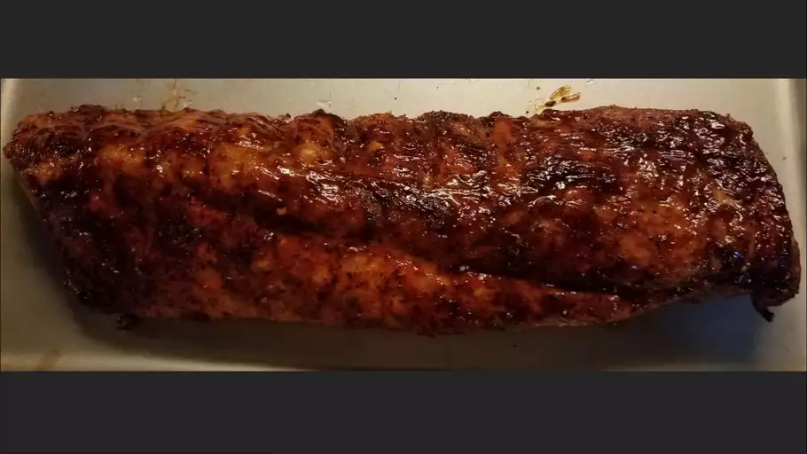

Baby-Back-Ribs

Description
A creamy coleslaw dressing that can be made with ingredients
you already have! You can pour it immediately over a 14-ounce
package of coleslaw mix or refrigerate until needed.
Ingredients
- 1/2 cup of mayonnaise
- 2 tablespoons white sugar
- 1 1/2 tablespoons lemon juice
- 1 tablespoon vinegar
- 1/2 teaspoon ground black pepper
- 1/4 teaspoon salt
Steps
- Gather all ingredients
- Whisk mayonnaise, sugar, lemon juice, vinegar,
pepper, and salt together in a bowl until smooth and creamy
- Store in an airtight container